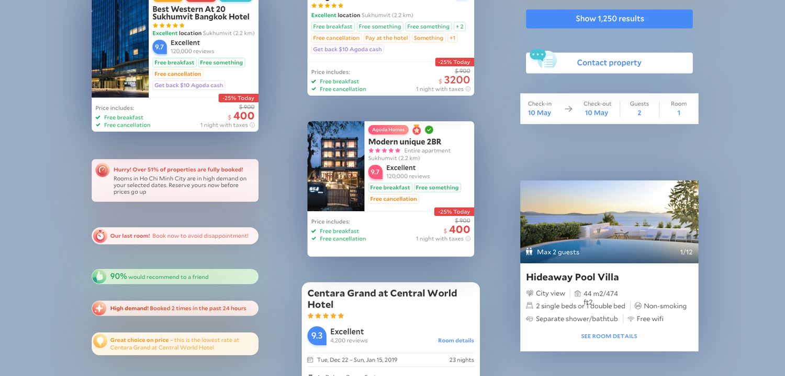
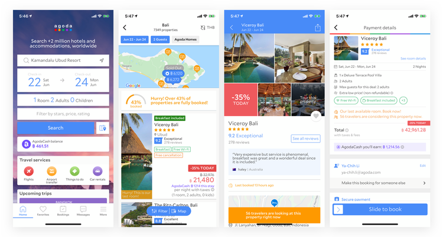
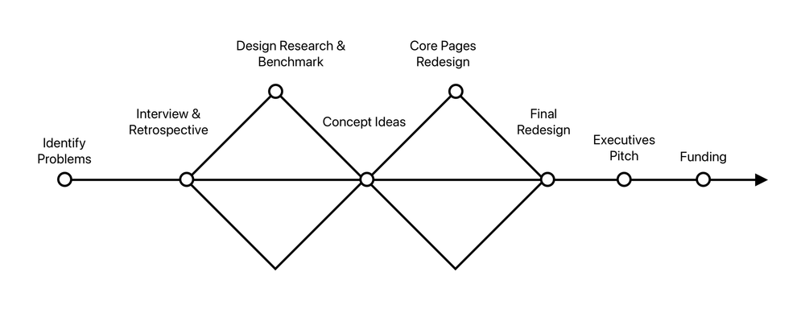
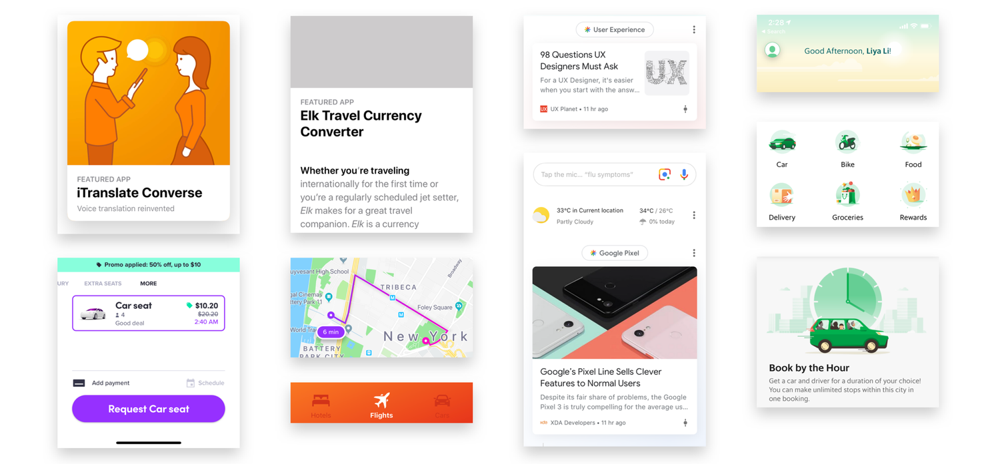
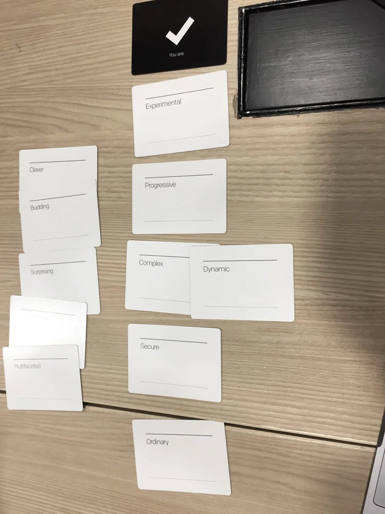
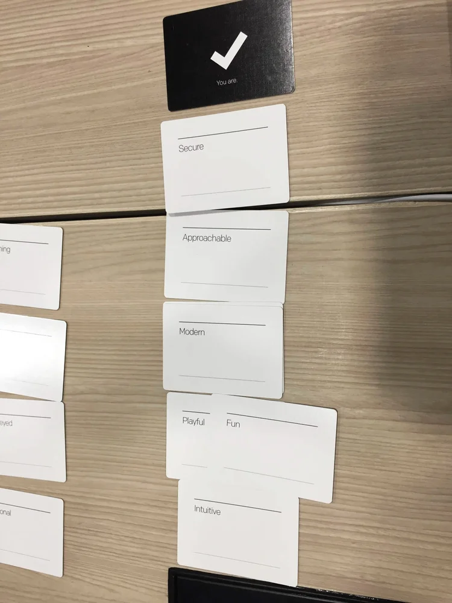
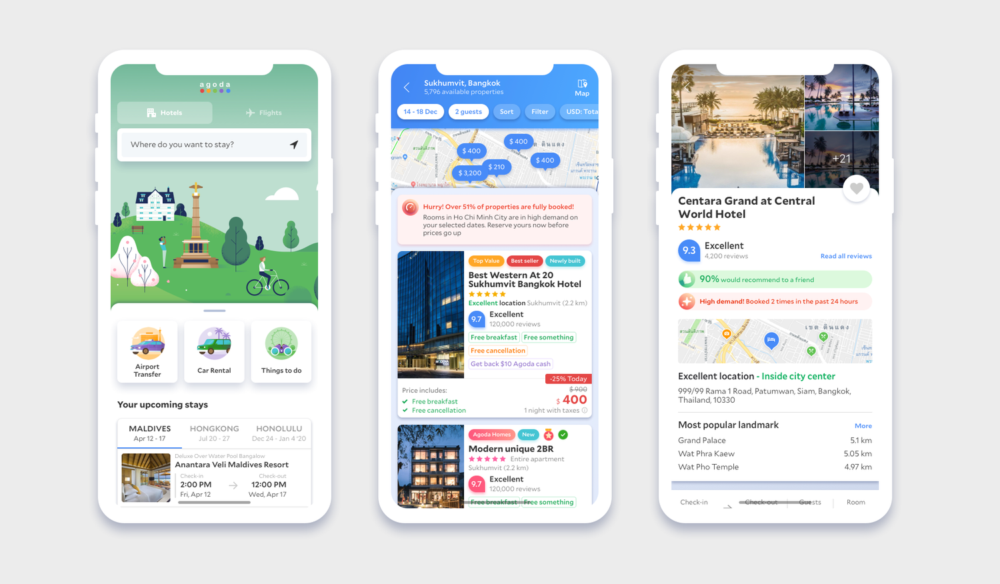
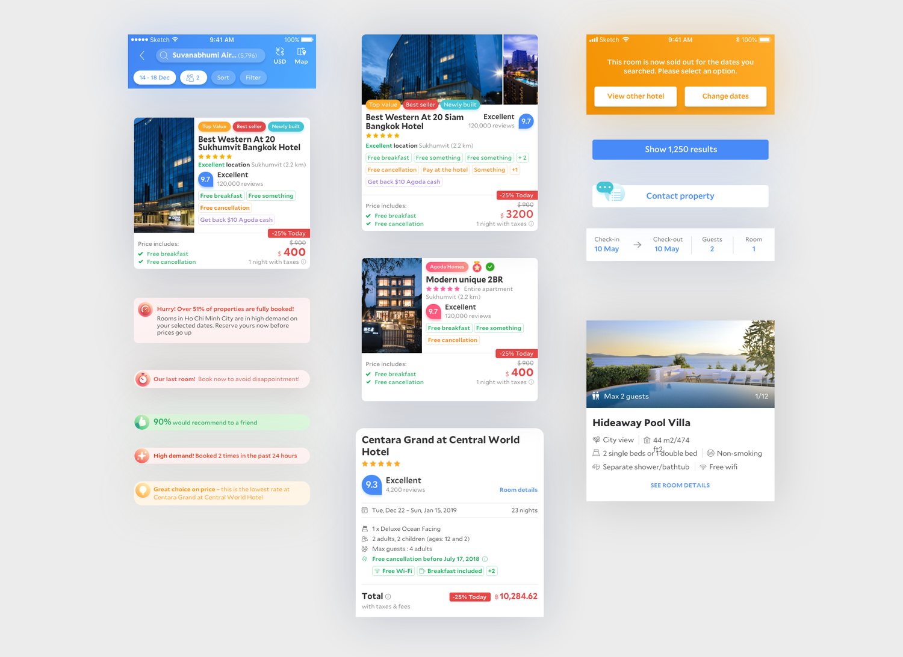
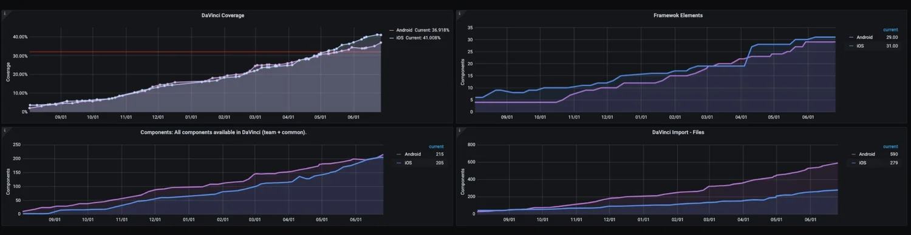

App Refresh
In 2019, as Agoda grew quickly, the design organization was not yet set up with a shared design language—so we could not reliably deliver a cohesive experience to users. Many product managers were shipping experiments and optimizations in parallel, and the app had become disjointed in both UI and UX. We did not have a clear visual direction or UI language as a team, so we took a deliberate leap: a major UI revamp and the start of a systematic foundation.

Background
A high volume of experimentation ran without a design system in place. The Agoda app had fragmented in both UI and UX.
- UX — filters. Filters did not carry over from search results, breaking continuity in the journey.
- UX — messaging. Patterns and tone were inconsistent across surfaces.
- UI — navigation. Three different navigation and header treatments competed in the same product.
- UI — color. Hundreds of color shades with no shared rationale.
- UI — controls. Buttons and text links did not share a common system.

Key problems
No defined language
Without unified design language or guiding principles, the team lacked a north star. Users had a harder time recognizing Agoda’s brand, which weakened familiarity and loyalty.
A/B testing culture and velocity
A fragmented experimentation culture meant legacy and new visual language often coexisted side by side.
Rapidly growing business
The product was expanding into multiple funnels (for example flights and packages) quickly, which forced design trade-offs without a shared foundation.
Design process
Over the three-month design window (Nov 2018 — Feb 2019), visual, UX, and motion worked in tight loops with product and engineering: audit and inventory, directional explorations, convergence on principles and components, then handoff into development starting Feb 2019.

The vision
We set the bar explicitly: best converting, yet beautiful and lovable—then worked backward into principles the whole team could use. Workshops, audits, and trend scans helped align us on hierarchy, clarity, and motion before we locked UI details.
Design language trends
We also looked outward at where consumer and travel apps were converging—stronger typographic systems, clearer affordances, and more opinionated motion—so our direction felt current without chasing every fad.

Defining design principles
We translated the vision into shared language—principles, examples, and “good enough to ship” criteria—so experiments stayed on-brand and the team could critique work against the same bar.


Redesigning core pages
Home, search, and key decision surfaces were redesigned together—not as one-off comps—so navigation, density, and component usage matched the new language before we scaled to the long tail of screens.

Animation and transitions
Motion became part of the language—not decoration—so tab changes, splash, map-led search, and filter flows felt intentional and on-brand.


Defining the design system
Principles turned into something buildable: naming, tokens, component anatomy, and variant rules so design and engineering could ship the same thing—foundation for the 46 components and the adoption story that followed.

Outcome
Velocity on product expansion
We launched the homepage redesign and kept pushing code and design adoption. The rebrand created room to expand into new product lines without starting from zero every time.
Reusability and scalability for design and dev
We built the business case and secured funding for a UI engineering team. Advocating for system thinking and design systems gave tech a path to save cost and improve efficiency through a reusable component library.
Agoda branding for users
A tight palette—five colors as the design language—helped differentiate benefits, messaging, and system intent without visual noise.
The component set scaled: 46 unique components (1,105 variants) covered roughly 80% of core pages.

Key milestones
- 2019 Q3 — Launched homepage refresh.
- 2019 Q4 — 2020 Q2 — Drove overall code and design adoption to about 40%.
- 2020 Q3 onward — Shifted focus to core pages; pushed adoption toward about 80%.
- 2020 — Roughly 2× dev and design velocity; framework readiness to about 90%; design adoption up to about 95%; shipped a white-label solution with a product launch.
How this led to the UX platform team
The harder work started after the pixels shipped: how might we socialize and advocate for the new design language? How might we accelerate adoption, teach designers the system—components, libraries, patterns—and shift mindsets from one-off craft toward systematic, holistic thinking?
That problem space is what pulled me toward building the UX platform capability—connecting language, tooling, and education so the organization could scale what we had proven with the refresh.
If you are interested in more detail on how I led that adoption and platform chapter—socializing the language, scaling the library, and shifting designers toward systematic thinking—reach out on LinkedIn.